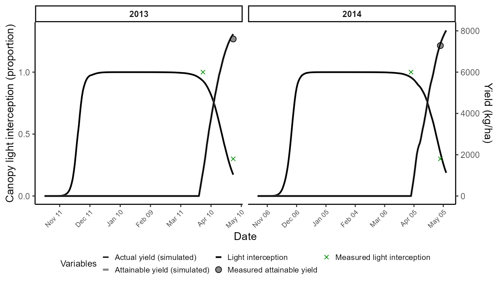

Yellow rust on wheat in Egypt
Source:vignettes/case-study-egypt-yellow-rust.Rmd
case-study-egypt-yellow-rust.Rmd🯠Goal
This vignette demonstrates how to use FraNchEstYN to estimate wheat yield losses, using a real dataset on yellow rust in Egypt.
The workflow has three progressive steps:
-
Crop calibration: fit basic agronomic parameters
using published trial data.
-
Disease calibration: calibrate epidemiological
parameters on the most susceptible variety (Sids12).
- Varietal extension: adapt parameters to other varieties, adjusting only Radiation Use Efficiency and Varietal Resistance.
Data sources include digitized observations from Omara et al. (2018).
📦 Packages
We load FraNchEstYN plus helper libraries for wrangling, visualization, and reproducible tables.
📥 Data loading
We use three inputs:
- weather_data: daily NASA POWER weather for Sharkiya, Egypt
- management_data: basic agronomic metadata (crop, sowing DOY, etc.)
- reference_data: measured yields and disease severity for several cultivars
We rely on NASAPOWER package (maintained by Adam Sparks 🙏) to directly query daily weather data for Sharkiya, Egypt.
🛰 NASA Power data
We request maximum and minimum temperature and precipitation from 2013–2015. Data are tagged with location and date components to simplify later filtering.
weather_data <- nasapower::get_power(
community = "ag",
lonlat = c(31.5145167, 30.6150167),
dates = c("2013-01-01", "2015-12-31"),
temporal_api = "daily",
pars = c("T2M_MAX", "T2M_MIN", "PRECTOTCORR")) |>
rename(DATE = YYYYMMDD) |>
mutate(
year = year(DATE),
month = month(DATE),
day = day(DATE),
Site = "Sharkiya",
lat = 30.6150167
) %>%
select(Site, T2M_MAX, T2M_MIN, PRECTOTCORR, year, month, day, lat)
head(weather_data)
#> ────────────────────────────────────────────────────────────────────────────────
#> ────────────────────────────────────────────────────────────────────────────────
#> ────────────────────────────────────────────────────────────────────────────────
#> # A tibble: 6 × 8
#> Site T2M_MAX T2M_MIN PRECTOTCORR year month day lat
#> <chr> <dbl> <dbl> <dbl> <dbl> <dbl> <int> <dbl>
#> 1 Sharkiya 20.5 7.1 0 2013 1 1 30.6
#> 2 Sharkiya 21.4 6.21 0 2013 1 2 30.6
#> 3 Sharkiya 22.3 9.08 0.07 2013 1 3 30.6
#> 4 Sharkiya 20.8 8.06 0.05 2013 1 4 30.6
#> 5 Sharkiya 18.6 8.09 0.81 2013 1 5 30.6
#> 6 Sharkiya 18.7 7.34 0.01 2013 1 6 30.6📑 Disease and yield data
The dataset reference_egypt is included in the package. It contains observations of disease severity, final yield, and attainable yield for several wheat varieties.
# comes with the package
data(reference_egypt)| site | variety | year | DOY | disease | fint | yieldActual | yieldAttainable |
|---|---|---|---|---|---|---|---|
| Sharkiya | gem10 | 2014 | 38 | 2 | NA | NA | NA |
| Sharkiya | gem10 | 2014 | 45 | 5 | NA | NA | NA |
| Sharkiya | gem10 | 2014 | 52 | 5 | NA | NA | NA |
| Sharkiya | gem10 | 2014 | 60 | 5 | NA | NA | NA |
| Sharkiya | gem10 | 2014 | 66 | 10 | NA | NA | NA |
| Sharkiya | gem10 | 2014 | 73 | 10 | NA | NA | NA |
🧰 Management data
We build a minimal management dataset “on the fly”, assuming a sowing date of DOY 300 (≈ October 27). This provides the necessary metadata to drive the crop model.
management_data <- data.frame(
crop = "wheat",
variety = "Generic",
resistance = 0, # dimensionless varietal resistance baseline
sowingDOY = 300, # adjust if you know the actual sowing date (DOY)
year = "All",
stringsAsFactors = FALSE
)
kable(management_data, caption = "management_data — minimal setup for calibration") |>
kableExtra::kable_styling(full_width = FALSE)| crop | variety | resistance | sowingDOY | year |
|---|---|---|---|---|
| wheat | Generic | 0 | 300 | All |
🌾 Step 1 — Crop calibration
We first calibrate crop parameters only, with disease processes disabled. This minimal calibration aligns field intensity (FINT) and attainable yield with observations.
➡️ Goal: adjust cycle length (harvest ≈ mid-May) and attainable yield formation.
# Select crop parameters for wheat
thisCropParam <- FraNchEstYN::cropParameters$wheat
# Adjust cycle length to harvest around mid-May (~DOY 135)
thisCropParam$CycleLength$min <- 3000
thisCropParam$CycleLength$max <- 4500
# We select the data from the most susceptible variety
thisReference_egypt<-reference_egypt |>
filter(variety=='sids12')
# Calibrate only crop component
df_crop <- franchestyn(
weather_data = weather_data,
management_data = management_data,
reference_data = thisReference_egypt,
cropParameters = thisCropParam,
diseaseParameters = FraNchEstYN::diseaseParameters$yellow_rust,
calibration = "crop",
start_end = c(2013, 2015),
iterations = 999,
franchy_message = FALSE
)The resulting chart shows canopy light interception and attainable yield dynamics compared with measured values.

🦠Step 2 — Calibrating disease on the susceptible variety (Sids12)
We now keep the calibrated crop parameters fixed, and calibrate the epidemiology of yellow rust using Sids12. We want to reproduce the observed disease progress curves without over-fitting yield damage. Therefore:
To avoid overparameterization of the damage mechanisms, we:
- Disable assimilate sappers, RUE reducers, and senescence accelerators.
- Keep active the light stealer mechanism (the main pathway for rust damage).
This ensures the model matches observed disease severity while keeping yield linked to light interception.
The output chart overlays simulated vs observed disease severity, canopy states, and actual yield.
# --- use calibrated crop from Step 1 ---
calibCrop <- df_crop$parameters$crop
# --- start from yellow rust defaults ---
calibDisease <- FraNchEstYN::diseaseParameters$yellow_rust
# disable yield-loss pathways
calibDisease$AssimilateSappersDamage$calibration <- FALSE
calibDisease$AssimilateSappersDamage$value <- 0
calibDisease$RUEreducerDamage$calibration <- FALSE
calibDisease$RUEreducerDamage$value <- 0
calibDisease$SenescenceAcceleratorDamage$calibration <- FALSE
calibDisease$SenescenceAcceleratorDamage$value<-0
# adjust inoculum shape
calibDisease$OuterInoculumShapeRelease$value <- 1
# --- run disease calibration ---
dfDisease <- FraNchEstYN::franchestyn(
weather_data = weather_data,
management_data = management_data,
reference_data = thisReference_egypt,
cropParameters = calibCrop,
diseaseParameters = calibDisease,
calibration = "disease",
start_end = c(2013, 2015),
iterations = 999
)The output chart overlays simulated vs observed disease severity, canopy states, and actual yield.
🌾 Step 3 – Extending to multiple varieties
Finally, we extend calibration to all wheat varieties in the dataset.
👉 In this step:
- Disable all calibration by default.
- Enable only Radiation Use Efficiency (RUE) and Varietal Resistance.
- Run the calibration loop for each variety.
This allows varietal comparisons while keeping the disease model unvaried.
#0. take the calibrated disease parameters
calibDisease<-dfDisease$parameters$disease
# 1. disable all calibration first
calibDisease <- FraNchEstYN::disable_all_calibration(calibDisease)
calibCrop <- FraNchEstYN::disable_all_calibration(calibCrop)
# 2. enable calibration only for RUE and varietal resistance
calibCrop <- enable_calibration(calibCrop,
keys = c("RadiationUseEfficiency",
"VarietalResistance"))
# containers for results
all_outputs <- list()
# loop across all varieties in the reference dataset
for (var in unique(reference_egypt$variety)) {
message(sprintf("▶️ variety: %s", var))
thisReference_data <- reference_egypt %>% filter(variety == var)
res <- FraNchEstYN::franchestyn(
weather_data = weather_data,
management_data = management_data,
reference_data = thisReference_data,
cropParameters = calibCrop,
diseaseParameters = calibDisease,
calibration = "all",
start_end = c(2013,2015),
iterations = 999
)
# --- extract outputs only if simulation slot exists ---
if (!is.null(res$outputs$simulation) && is.data.frame(res$outputs$simulation)) {
out_df <- res$outputs$simulation %>% mutate(Variety = var)
all_outputs[[var]] <- out_df
}
}
# final binding
outputs_df <- if (length(all_outputs)) bind_rows(all_outputs) else tibble()
# bind final results
outputs_df <- bind_rows(all_outputs)We display results in an interactive Plotly chart, enabling zooming, tooltips, and toggling of variables for clearer interpretation.
📠Key take-home messages
FraNchEstYN successfully reproduced yellow rust severity and yield losses in Egypt using published trial data.
Crop calibration (Step 1) focused on cycle length and attainable yield, while disease calibration (Step 2) relied mainly on the light stealer mechanism to match canopy-level impacts.
Extending calibration to multiple varieties (Step 3) required adjusting only Radiation Use Efficiency and Varietal Resistance, keeping epidemiology consistent across cultivars.
The framework outputs diagnostics, parameter estimates, and simulations in a structured way, ready for analysis and visualization (including interactive Plotly plots).
🚀 Next steps
This vignette showed how to calibrate wheat yield losses from yellow rust in Egypt using bundled datasets. From here, you might want to:
🌠Apply to other environments: swap in weather and reference datasets from different sites or years.
🌾 Test other crops or pathogens: explore parameter sets in cropParameters and diseaseParameters.
🎛️ Experiment with calibration scope:
“all†→ crop + disease jointly
“crop†or “disease†→ focus on one component
📊 Assess uncertainty: run more iterations or replicate calibrations to check stability of parameter estimates.
ğŸ› ï¸ Extend the workflow: integrate with your own management practices, local trial data, or yield-loss models for impact assessment.